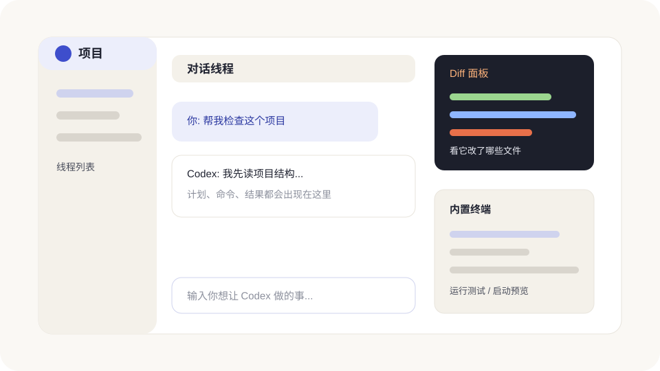

2026 年 9 月功能更新
这次不只是换个模型名。你可以按任务选择 GPT-6.1 Sol,在符合条件的账号上跨设备继续工作,也能用带操作界面的插件。下面先讲月底新增内容,再保留月初的快捷聊天和截图教程。只用 App 的人,跳过 CLI 那一节就好。

月底新增功能,先挑和你有关的看
| 你想做什么 | 看哪一项 | 先记住 |
|---|---|---|
| 做项目、写文档,兼顾效果和消耗 | GPT-6.1 Sol 与模型选择 | 先看自己的模型列表,别只照抄名字。 |
| 离开电脑也能继续交代工作 | Work 同步与 dots | 用到本地文件的步骤仍需要电脑在线。 |
| 每次开任务不用重新装环境 | 可复用云端环境 | 发布环境不等于发布网站。 |
| 插件里直接选文件、填表、看结果 | 插件扩展和事件 | 要插件作者接入,不是所有插件自动都有。 |
| 在终端里工作更顺手 | CLI 0.159.2 | 升级 CLI 不等于升级桌面 App。 |
跨设备 Work 和 dots:先分清工作在哪里跑
跨设备 Work 可以让你在电脑开始一条任务,再从网页或手机接着看结果、补要求。启用了 Local computer access 的任务,由云端协调,但读取本地文件、运行本地程序时仍需要那台电脑在线。它不是把整个电脑搬到了云端。
- 先用不含敏感资料的小任务练习,确认登录的是同一账号和工作区。
- 检查这条 Work 任务是否已启用同步及所需的本地访问;团队账号先问管理员。
- 在另一台设备打开同一条任务,补一句“先汇总进度,暂时不要修改文件”。
- 需要本地资源时保持电脑联网,回到电脑核对产物和权限。
dots 是另一项逐步开放的持续工作功能。它有云端电脑和浏览器,可以接手长期事项;纯云端步骤可以在你的电脑关闭时继续。第一次在桌面 App 或桌面浏览器创建,再连接确实需要的应用。它不是悬浮控件换了个名字,也不是本地任务自动获得了后台运行能力。
尝试时可以这样交代:“请持续跟进这份产品需求,只整理公开资料和待确认事项。重要变化才提醒我,不要代发消息或提交代码。”先确认范围、停止方式和交付位置,再交出长期任务。依据:Work 本地访问、dots 介绍与开放范围。
Codex Cloud:环境准备一次,后面接着用
“环境”就是项目需要的仓库、工具和依赖。新版可以把准备好的环境发布下来,新任务再从它创建各自独立的工作目录。适合反复做同一个项目,不必每次重新解释怎么安装和启动。
- 在新任务中选择 Work in > Cloud > Select environment > Create environment。
- 选择已授权的 GitHub 仓库,让 Codex 检查并准备依赖;有不清楚的权限先停下来确认。
- 查看准备报告,要求跑一次启动或测试检查,补好缺失项。
- 确认后点 Publish;看到 Environment published,再开始新任务。
Save 是保存配置,Publish 是发布给后续任务复用的环境。这不是把产品官网部署上线,也不会自动把电脑上的未提交文件复制过去。密钥放在受控配置中,不要写进仓库。官方仍保留 Legacy 云端流程用于部分旧集成,两套界面不要混着操作。云端环境操作说明
插件可以有自己的界面,还能接收事件
Plugin Extensions 让支持的插件出现在侧边栏、对话旁的面板或文件编辑器里,也可以用表单收集你的选择。普通用户不用写代码:安装并授权插件后,从它提供的入口开始就行。输入框里的插件内容提及目前限桌面端;Free / Go 的网页扩展仍标注为即将提供。
MCP Events 则是“有新情况再来处理”:例如指定文档新增评论后整理修改建议。它需要插件服务实现 MCP 2.0 和 webhook,不是给任意旧插件说一句“帮我盯着”就一定能启用。设置时写清监控对象、触发条件和允许动作。具体用法和官方示例插件见 A7 插件扩展。
网站标注也有新的扩展接口,能带上组件上下文或预览选项。普通框选和评论不需要网站改代码;开发者接入的增强能力另看 A4 标注扩展。安全扫描的新云端插件则见 Security Cloud,它与本地 Security 插件不是同一个入口。
Space 和团队任务:不是每个人都要用
Space 的 Page 可以把需求、资料和讨论留在一份可继续编辑的页面里。在 Space 点 New page,或让 ChatGPT 把已有讨论整理成 Page;编辑时用 / 插入内容,选中文字再用 Ask for change 局部修改。适合“这份资料以后还要反复用”的场景。分享前先看清谁能访问。Pages 使用说明
Team Tasks 用团队服务账号和已批准的连接在云端执行定时或事件任务,不是借你的私人邮箱替全组工作。团队管理员先配置权限和连接,负责人再安排任务。个人用户继续使用原有定时任务即可;团队使用前先确认账号归属、数据范围和谁能看运行结果。团队任务说明
月初功能回顾:在别的窗口也能发起快捷聊天
9 月 11 日的桌面端更新补上了悬浮快捷聊天。比如你正在整理一份文案,只想临时问一句,不用先找回主窗口。到 Settings > Pets 选 Mini,就能使用简洁的悬浮控件。
- 保持桌面 App 运行。Mac 按 Option+Space,Windows 按 Windows+Alt+P。
- 在快捷输入框写下需求,按 Enter 发送。需要补上下文时用
@,指定技能时用$。 - 点铃铛看任务进度,再点对应任务回到完整对话。
这类快捷聊天不属于某个项目。要修改已有网站、沿用项目规则或读取指定仓库,回主 App 从那个项目里开始。快捷键冲突时,到 Settings > Keyboard shortcuts 修改 Show pet。官方悬浮控件说明
Windows 也能发窗口截图了
把错误弹窗放到最前面,Mac 同时按左右两个 Command,Windows 同时按左右两个 Alt,就能把窗口作为 Appshot 交给 ChatGPT。它是“给对方看一眼”,不是自动授权对方操作电脑。
截图发到哪里、首次权限怎么检查,看 A4 的分系统操作步骤。Windows 截图在主 App 打开;Mac 还可以配合悬浮控件。别把密码、付款信息和无关聊天一起发出去。官方 Appshots 说明
旧模型:一个已停用,一个要提前迁移
| 模型 | 截至 9 月 30 日的状态 | 你需要做什么 |
|---|---|---|
| GPT-5.3-Codex-Spark | 9 月 14 日已结束研究预览,App、CLI 和 IDE 扩展不再提供。 | 不要继续照旧教程找 Spark;改选账号当前支持的模型。 |
| GPT-5.5 | 已公告将于 10 月 14 日从 ChatGPT、Work 和 Codex 退役;现在不是已经停用。 | 替代方案已按套餐调整,看 A8 迁移清单;此次退役不影响 OpenAI API。 |
别只改眼前这条对话。还要检查工作区默认模型、自定义智能体、定时任务和脚本里有没有写死旧名字。详细清单见 A8 模型迁移。依据:9 月 14 日公告、Models。
GPT-6.1 Sol 来了,模型现在怎么选
9 月 29 日更新加入 GPT-6.1 Sol。对于要反复做的编码、文档和跨工具工作,可以先试它;最难的任务再评估 Astra,规则明确的重复工作可以用 Luna。别把新模型当成万能按钮,任务资料和验收要求还是要说清楚。
| 模型 | 用人话说 | 适合什么 |
|---|---|---|
| 6.1 Sol | 复杂工作的新选择,消耗低于 Astra | 持续改项目、研究并交付文档。 |
| Astra | 优先处理最难的端到端任务 | 步骤多、取舍多、需要反复核对的重要工作。 |
| 6 Luna | 适合目标清楚的重复工作 | 提取、分类、格式转换和批量摘要。 |
桌面端从输入框下方的模型控制选择;有 Power 控件时,可以打开 Advanced 找具体型号。先用熟悉的小任务比较结果,不必一上来就拉满推理强度。CLI 里可以指定:
codex -m gpt-6.1-sol
GPT-6.1 Sol 首发覆盖 Plus、Pro、Business、Enterprise 和 Edu 的相关入口,Free / Go 不在首发范围;Enterprise / Edu 需要管理员开启。Work / Codex 有模型,不代表普通 Chat 也有。完整说明见 官方 Models。
Ultra 和 Ultrafast,别看错了
Ultra 是推理和多智能体档位,Ultrafast 是速度档位。Astra Ultrafast 首发面向 Pro $500 和符合条件的 Enterprise / Edu;它的“最高 8 倍”说的是生成 token 的速度,不是整项工作 8 倍快。GPT-6.1 Sol 当前支持 Standard / Fast,Ultrafast 仍待后续提供。
加速会多用额度。先做一项短任务,看看用量变化,再决定是否长期开启。不要拿速度倍率推算账单,也不要为了找不到的入口反复重装。速度档位、套餐与用量说明
CLI 0.159.2:终端用户再看这一节
本次查到的最新稳定版记录是 9 月 29 日的 0.159.2,修复 Windows 启动后台进程时闪出控制台窗口的问题。0.159.1 已将 GPT-6.1 Sol 加入默认模型目录;原有手动配置不等于自动被替换。npm 安装的用户可以这样升级:
npm install -g @openai/codex@0.159.2 codex --version
0.158 / 0.159 改善了复制格式、草稿保留和登录流程,新增主动启用的 instant_interrupt。此前 0.156 已默认开启语音和 Worktree 支持,新增 F8 语音切换、声音设置与用量面板。操作放在 CLI 第 03 章;下表保留较早能力并更新适用状态。
| 新变化 | 怎么用 | 对你有什么帮助 |
|---|---|---|
| Astra 进入模型列表 | 输入 /model,或启动时加 -m gpt-6-astra。 | 不用手动猜模型名,可以直接从列表选择。 |
| Worktree | 启动时使用 --worktree,或在 TUI 里输入 /worktree。 | 给新任务或分叉任务建隔离副本;0.156 起默认开启支持。 |
| 运行中提问 | Codex 工作时出现问题卡片,可选建议答案或填写自己的回答。 | 回答问题时不会挤掉你正在写的下一条消息。 |
| 复制更完整 | /copy 可以复制状态输出或单项会话信息。 | 粘贴到富文本编辑器时更容易保留格式。 |
| Windows 后台服务 | 多个会话可共用后台 Codex server。 | Windows 上的会话管理和更新更稳定。 |
| Vim 编辑增强 | 新增 R 替换模式,并改进撤销、重做和 Escape。 | 只对已经习惯 Vim 键位的人有用,新手可以跳过。 |
Worktree 到底解决什么问题
Worktree 可以理解成“同一个 Git 项目的另一张工作桌”。主项目继续保持原样,新任务在隔离目录里改文件。你想同时试两个设计方案,或者让两条任务并行工作时,它会比大家挤在同一个文件夹里稳得多。
- 确认项目已经是 Git 仓库,并先保存重要的未提交改动。
- 用
codex --worktree启动隔离会话,或在当前 TUI 输入/worktree。 - 让 Codex 说明新 Worktree 从哪个分支开始、实际目录在哪里。
- 完成后先看 Diff 和测试结果,再决定合并、保留还是删除。
插件和 MCP:少重启,登录失败更说得清
本地 Codex Security 插件记录已到 0.1.30。这个版本本身只是版本号调整,实际的新变化来自 0.1.25:扫描阶段和证据保存更清楚,也扩大了部分文件类型的检查。修复验证和补丁风险评估继续保留。操作方法见 A7 最新插件说明。
0.154.0 会让已经打开的会话发现新安装的插件工具,外部升级或回退插件后,也会刷新 Skills 和 Hooks。也就是说,新版 CLI 通常不必为了一个新插件整条会话重开;如果入口仍没出现,再检查版本、插件状态和工作区策略。
MCP 的 OAuth 刷新也更稳了。刷新失败时会明确显示登录挑战,让你重新授权;被拒绝的工具调用不会悄悄自动再跑一遍。看到登录提示时,完成授权后要自己确认是否重新提交刚才的操作。
另外,旧的 codex mcp-server 入口在 0.154.0 已经移除。普通用户连接外部工具仍用 codex mcp;开发者把 Codex 嵌进其他程序时使用 Codex App Server。
几项看不见,但很重要的安全修复
Mac 用户先更新桌面 App。9 月 25 日记录注明,macOS 版本 26.924.20706 修复了 CVE-2026-100754。检查应用自身的更新,不要只运行 npm 升级 CLI。下面几项是本月较早的安全改进回顾。官方安全更新记录
- 工作区还没有被信任前,启动过程不会运行由工作区控制的辅助程序。
- macOS 沙盒加强了对终端输入注入的阻挡。
- 恢复或分叉远程任务时,会保留已经保存的权限设置。
- 新会话和分叉会话会尊重服务器默认模型,除非你明确覆盖。
- 同一条对话正在另一个 App 里写入时,恢复会先显示只读记录和重试入口,保护你还没发送的草稿。
这些变化不需要你打开某个开关,但能减少“还没确认就运行”“恢复后权限突然变了”这类风险。升级 CLI 的价值不只是拿新功能,也包括带上这些修复。
手机 Remote 也更像真正的任务面板了
9 月 23 日的 iOS 1.2026.258 加入 iPad 横屏分栏和嵌套仓库改动浏览,并修复部分配对和排队回复问题。新版本提示见 A9 Remote 教程;下面保留月初的基础能力回顾。
9 月 8 日的 iOS 更新补强了远程协作:输入框里可以用 @ 提及其他任务;Codex 运行时提出问题,你可以直接回答而不丢草稿;文件浏览加入返回、最近文件和阅读位置记忆;新 Worktree 可以选择起始分支,也可以带上电脑当前的本地改动。
Voice 现在会尊重你选中的模型和推理强度,代码审查、断线重连和 Queue / Steer 切换也更可靠。手机仍然只是遥控器,任务真正运行在已连接的电脑上;涉及大段 Diff、账号操作和高风险审批时,回到电脑处理更稳妥。
升级后做一次 6 分钟检查
- 更新桌面 App,试一次悬浮快捷聊天;修改项目仍从项目入口开始。
- 拿一个不含隐私的窗口试 Appshots,确认截图进了正确对话。
- 检查模型列表和定时任务,清理 Spark,为 GPT-5.5 做迁移准备。
- 用 CLI 的人运行
codex --version,确认本轮示例对应 0.159.2;纯 App 用户跳过。 - 用手机的人检查 Remote 项目、工作目录和排队消息;没有配对也不影响桌面端使用。
- 发起一项只读小任务,核对模型、权限、文件范围和输出,再恢复正式工作。
官方资料入口
- What's new:本周功能总览,不是所有账号均已开放的清单。
- Models:最新推荐、套餐范围和旧模型迁移。
- ChatGPT & Codex changelog:核对至 9 月 29 日的带日期更新记录。
- Git worktrees:Worktree 的用途和完整工作流。
- Plugins:插件安装、授权和使用范围。
- Codex Remote:电脑配对、手机操作和审查。